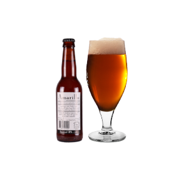
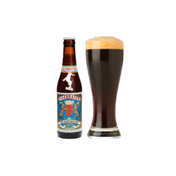
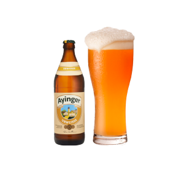
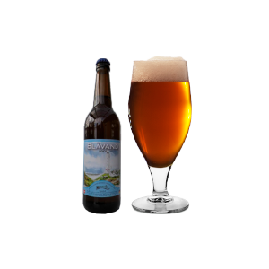

De molen - Amarillo
Stærke humle smage, med pilsner- og karamel

Ayinger - Celebrator
en dominerende smag af malt, som originalt har dens opskrift fra en monk

Urweisse Ayinger
En intens aroma af citrus, ristet byg og banan

Warwik - Bock’en “blåvand”
Karamelmalt, og humlen er en tjekkisk Saaz